40 سؤال
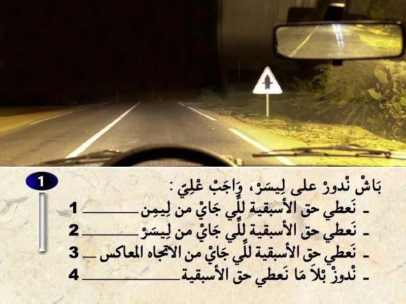
الجواب الصحيح: 3
العلامة الطّرقية تعني انتباه الطّريق ذات أولوية أي أنه لدي حق الأسبقية في ملتقى الطّرق القادم، وهذه العلامة الطّرقية توجد أيضا للعربات القادمة في الاتّجاه المعاكس لديهم هم أيضا طريق ذات أولوية. بما أنني سوف أنعطف على اليسار فهذا يعني على أن العربات القادمة في الاتّجاه المعاكس سوف تصبح على يميني وهذا يعني على أنني يجب عليّ إعطائهم حق الأسبقية. إذن في هذه الحالة بما أنه لدي علامة طريق ذات أولوية إذن لن أعطي حق الأسبقية للعربات القادمة من الجهة اليمنى أو اليسرى، بل يجب عليّ إعطاء حق الأسبقية للعربات القادمة في الاتّجاه المعاكس فقط بما أنني سوف أنعطف على اليسار.
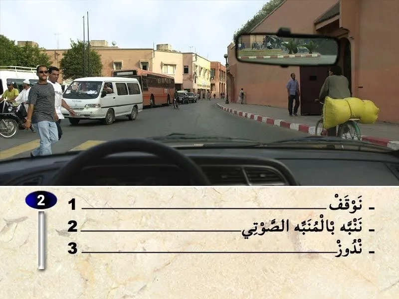
الجواب الصحيح: 1
الراجلين مندمجون في ممر الرّاجلين يعني الأسبقية لهم ويجب عليّ الوقوف وإعطائهم حق الأسبقية في المرور أوّلا. (المنبّه الصوتي ممنوع على الرّاجلين، ولا يمكنني المرور لأن الأسبقية للرّاجلين في ممر الرّاجلين).
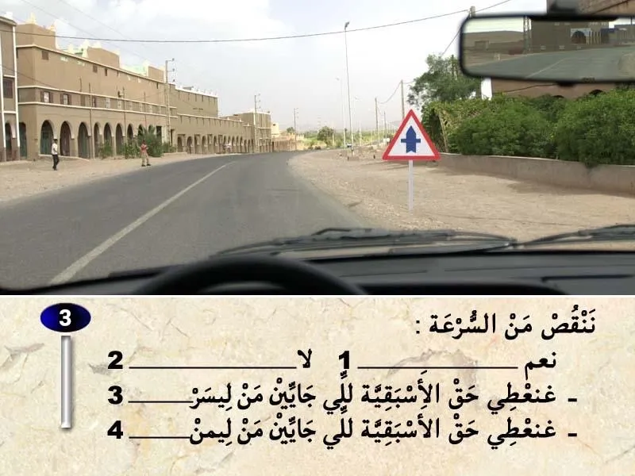
الجواب الصحيح: 1
العلامة الطّرقية تعني انتباه الطّريق ذات أولوية أي أنه لدي حق الأسبقية في ملتقى الطّرق القادم، بما أن العلامة الطّرقية هي علامة خطر ويوجد ملتقى طرق قريب إذن يجب عليّ الإنقاص من السّرعة. لن أقوم بإعطاء حق الأسبقية للعربات القادمة من اليمين أو اليسار لأن الأسبقية لي في ملتقى الطّرق القادم.
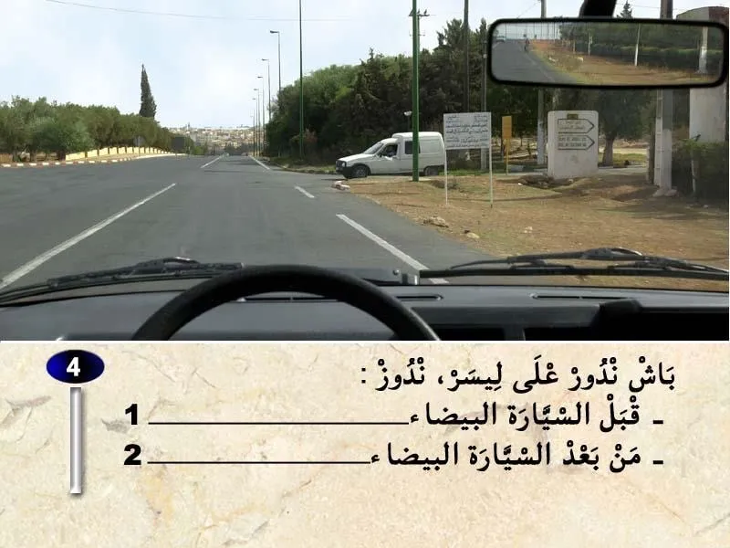
الجواب الصحيح: 2
نتواجد قرب ملتقى طرق، ولا توجد علامات طرقية تنظّم حركة السّير في هذا الملتقى إذن سوف نقوم بتطبيق القاعدة العامة لملتقيات الطّرق وهي الأسبقية للعربات القادمة من الجهة اليمنى. إذن في هذه الحالة لكي أقوم بالانعطاف على اليسار فيجب عليّ ذلك بعد مرور السيّارة البيضاء.
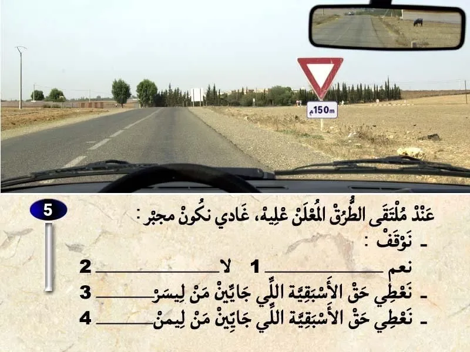
الجواب الصحيح: 2 و 3 و 4
العلامة الطّرقية تعني ليس لي حق الأسبقية بعد 150 متر في ملتقى الطّرق القادم، إذن عند ملتقى الطّرق القادم من الواجب عليّ الإنقاص من السرعة و إعطاء حق الأسبقية للعربات القادمة من الجهة اليمنى والجهة اليسرى، وليس من الواجب عليّ الوقوف لأن العلامة الطّرقية لا تجبرني على الوقوف.
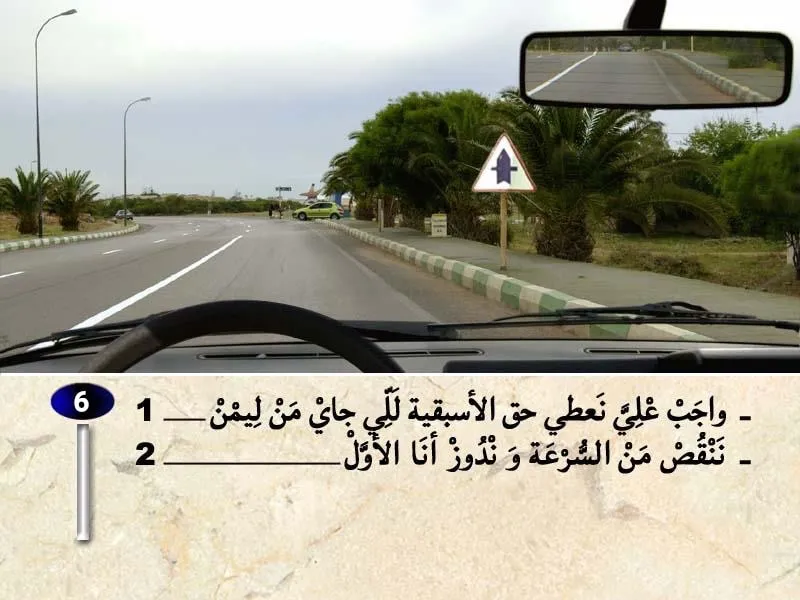
الجواب الصحيح: 2
العلامة الطّرقية تعني انتباه الطّريق ذات أولوية أي أنه لدي حق الأسبقية في ملتقى الطّرق القادم ولن أعطي حق الأسبقية للعربات القادمة من اليمين لأن الأسبقية لي، إذن في هذه الحالة بما أن العلامة الطّرقية هي علامة خطر ويوجد ملتقى طرق قريب إذن يجب عليّ الإنقاص من السّرعة وأقوم بالمرور أنا الأول.
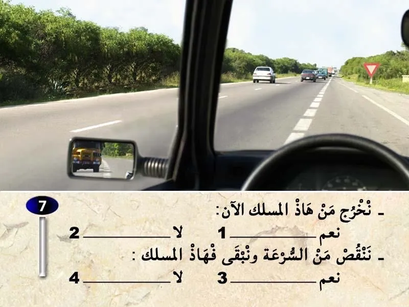
الجواب الصحيح: 1 و 4
أتواجد في مسلك الاندماج والذي يقترب من الانتهاء، في هذه الحالة بما أنه يوجد عربة من الوزن الثقيل في الخلف وتبدو بعيدة وسرعتها بطيئة، فيمكنني الزيادة في السرعة والاندماج في مسلك السّير العادي الان بما أن مسلك الاندماج لم يتبقى له الكثير وينتهي وهذا يعني أنني لن أستمر في السّير فيه.
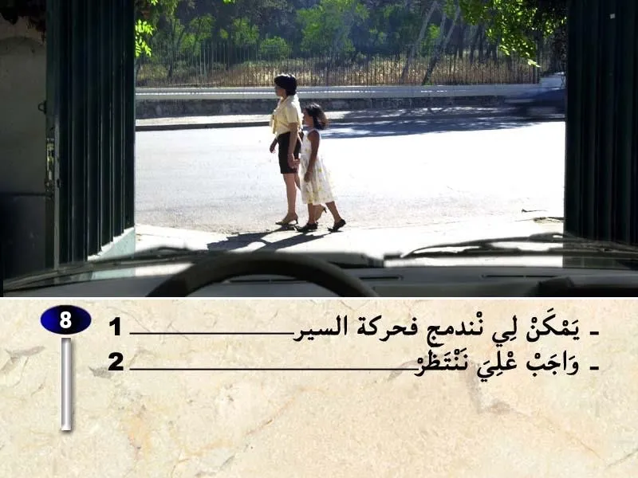
الجواب الصحيح: 2
لا يمكنني الاندماج في حركة السّير الان لأنه يوجد راجلين يقومون بالمرور ويجب عليّ الانتظار، لو قمت بالاندماج في حركة السّير الان سوف أقوم بالاصطدام بهم. إذن في هذه الحالة من الواجب عليّ الانتظار.
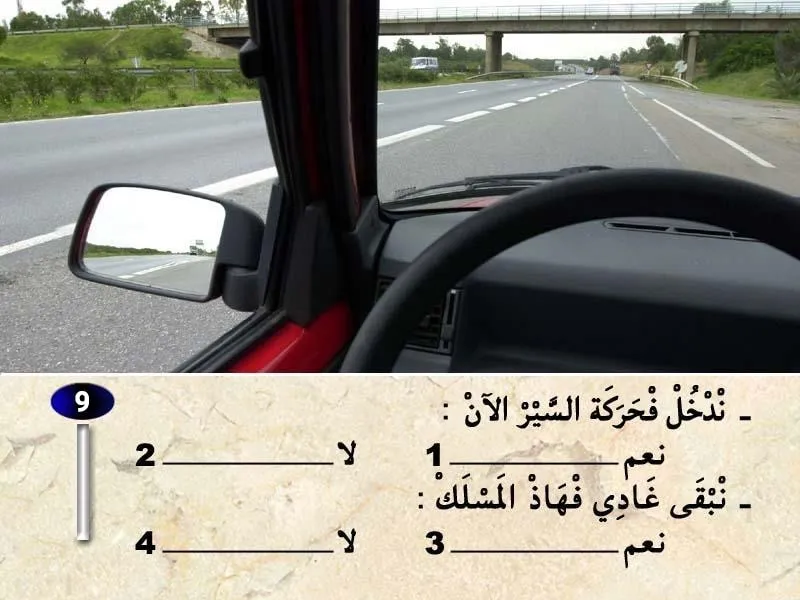
الجواب الصحيح: 2 و 3
أتواجد في مسلك الاندماج، كما نلاحظ فيوجد خط متّصل على اليسار ولا يمكنني تخطيه الان والاندماج، يجب عليّ الانتظار إلى حين أن يصبح الخط متقطّع. إذن في هذه الحالة لا يمكنني الدخول في حركة السّير الان ويجب عليّ البقاء و إكمال السّير في مسلك الاندماج.
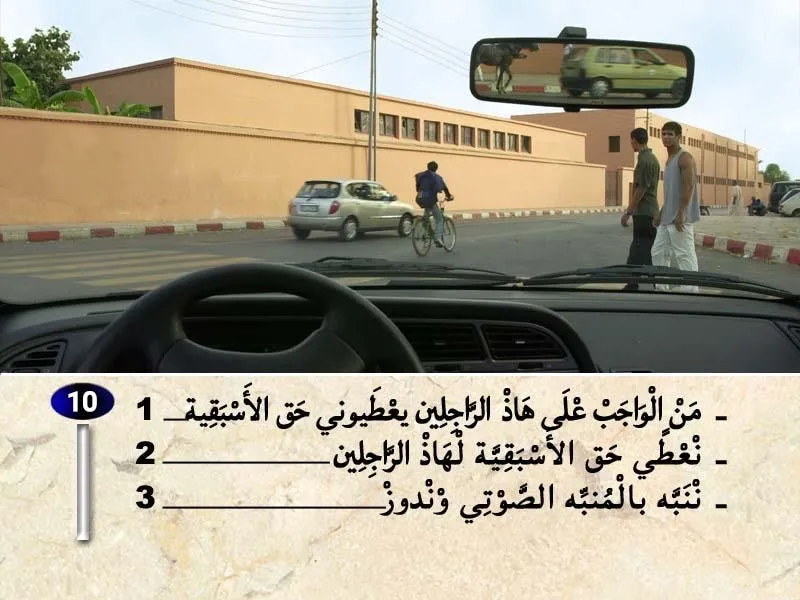
الجواب الصحيح: 2
الراجلين مندمجون في ممر الرّاجلين يعني الأسبقية لهم ويجب عليّ الوقوف وإعطائهم حق الأسبقية في المرور أوّلا. (المنبّه الصوتي ممنوع على الرّاجلين، ولا يمكنني المرور لأن الأسبقية للرّاجلين في ممر الرّاجلين).
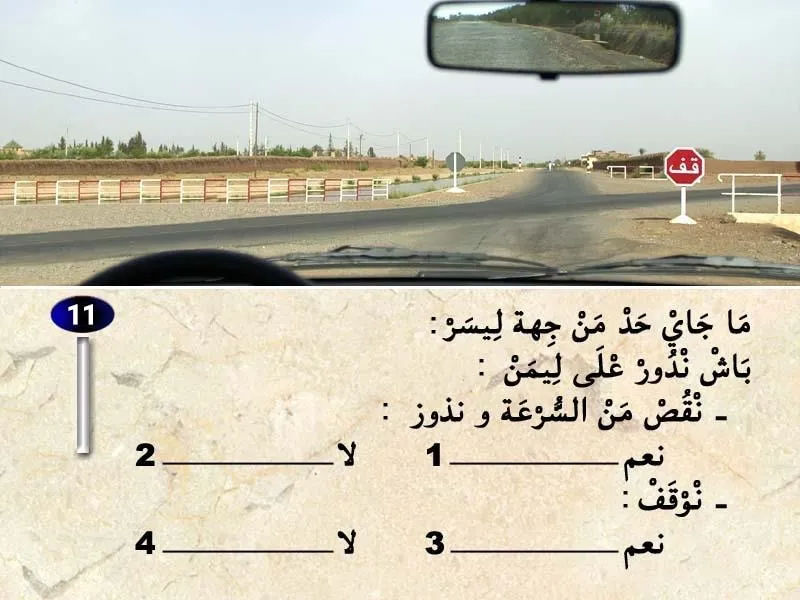
الجواب الصحيح: 2 و 3
نتواجد في ملتقى طرق، ولدينا علامة قف وهي تجبرني على الوقوف مهما كانت الطّريق فارغة أو لا. إذن في هذه الحالة لكي أقوم بالانعطاف على اليمين لا يمكنني الإنقاص من السير والمرور مباشرة، بل جب عليّ الوقوف والتأكد من الطّريق وبعد ذلك يمكنني الانعطاف على اليمين.
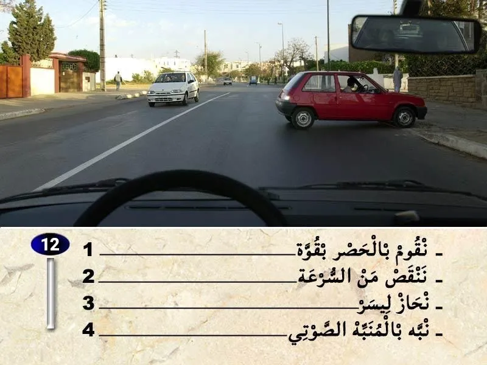
الجواب الصحيح: 2
السيّارة الحمراء تقوم بالرّجوع للخلف، لا يمكنني الحصر بقوة والتوقّف لأنه توجد سيارة في الخلف وسوف تصطدم بي في حالة قمت بالحصر بقوّة، لا يمكنني الانحياز لليسار لأنه توجد سيّارة قادمة في الاتّجاه المعاكس، وكذلك لا يمكنني استعمال المنبّه الصّوتي لأننا داخل المجال الحضري ونستعمله فقط في حالة الخطر أو للضّرورة، إذن في هذه الحالة القرار الصائب والمنطقي هو الإنقاص من السّرعة.
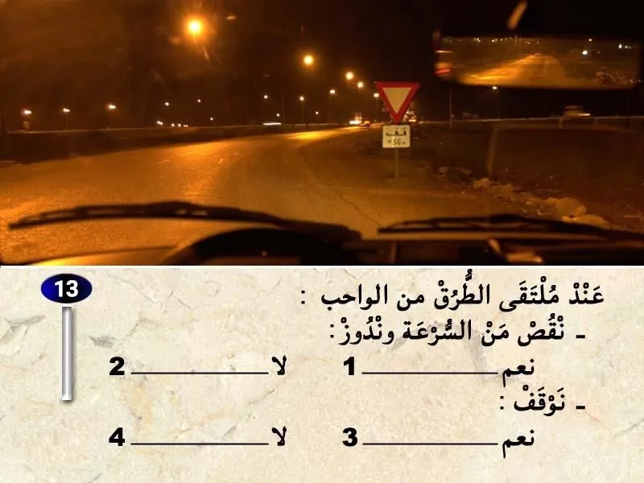
الجواب الصحيح: 2 و 3
العلامة الطّرقية تعني انتباه ليس لي حق الأسبقية وتوجد علامة تكميلية تشير إلى وجود علامة قف على بعد 150 متر في ملتقى الطّرق القادم، إذن لا يمكنني الإنقاص من السّرعة والمرور مباشرة في ملتقى الطّرق القادم بل من الواجب عليّ الوقوف.
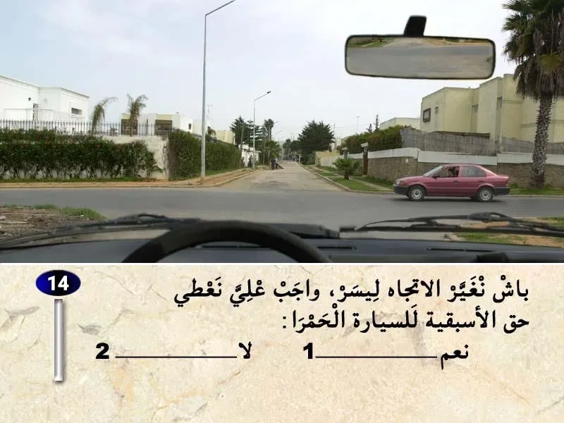
الجواب الصحيح: 1
نتواجد قرب ملتقى طرق، ولا توجد علامات طرقية تنظّم حركة السّير في هذا الملتقى إذن سوف نقوم بتطبيق القاعدة العامة لملتقيات الطّرق وهي الأسبقية للعربات القادمة من الجهة اليمنى. إذن في هذه الحالة لكي أقوم بالانعطاف على اليسار فيجب عليّ إعطاء حق الأسبقية للسيّارة الحمراء لأنها تتواجد على اليمين والأسبقية لها.
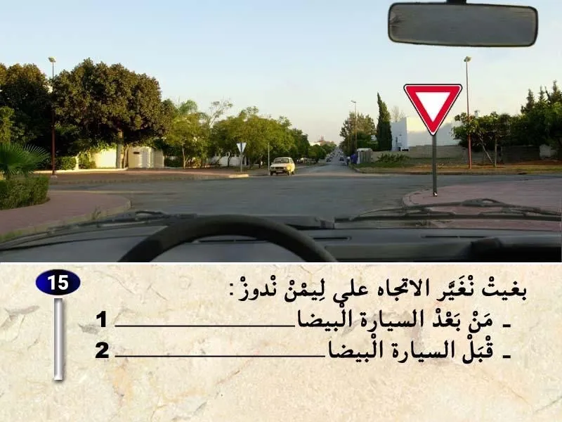
الجواب الصحيح: 2
العلامة الطّرقية تعني ليس لي حق الأسبقية في هذا الملتقى الطّرقي، والسيّارة التي في الاتّجاه المعاكس لديها نفس العلامة الطّرقية. إذن بما أنني سوف أنعطف على اليمين سوف أتواجد على يمين السيّارة، أي أنه يجب عليها أن تعطيني حق الأسبقية لأنني سوف أتواجد على يمينها. (في مثل هذه الحالات لكي لا تتشتت(ي) عندما تريد إكمال سّير مباشرة أو الانعطاف على اليمين والأسبقية لي) إذن إذا أردت تغيير الاتّجاه لليمين فأقوم بذلك قبل السيّارة البيضاء.
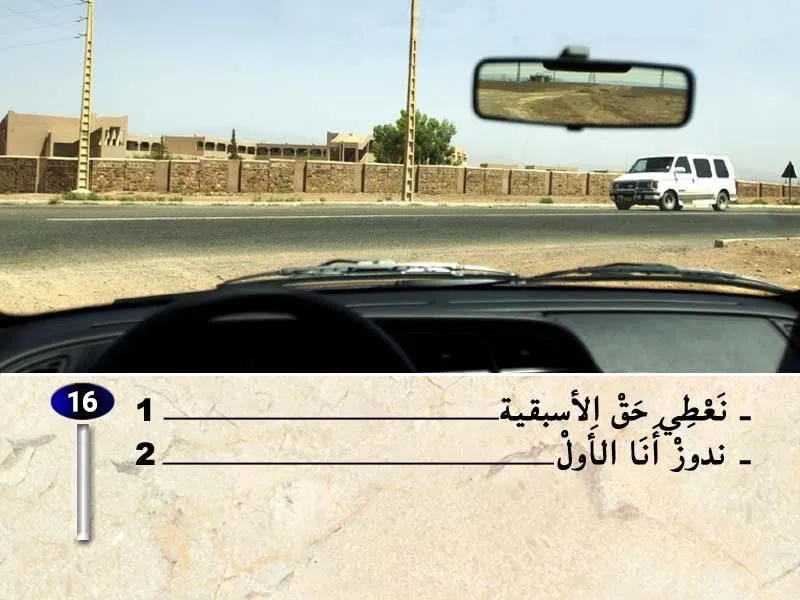
الجواب الصحيح: 1
أتواجد في طريق غير معبّدة، في هذه الحالة لكي أندمج في حركة السّير فيجب عليّ أن أعطي حق الأسبقية للعربات القادمة من الجهة اليمنى وكذلك العربات القادمة من الجهة اليسرى.
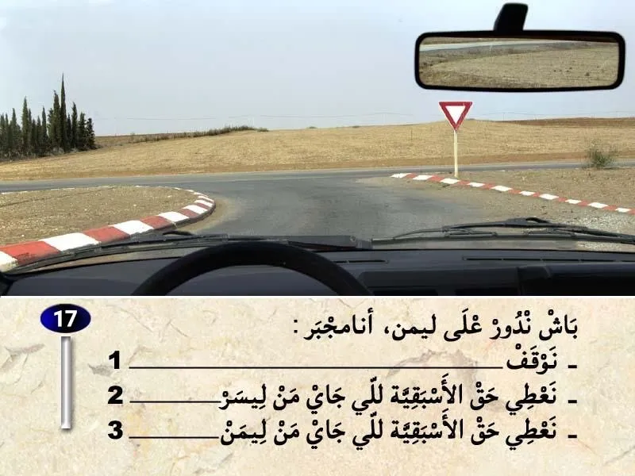
الجواب الصحيح: 2 و 3
العلامة الطّرقية تعني ليس لي حق الأسبقية في هذا الملتقى الطّرقي، إذن في هذه الحالة لكي أقوم بالانعطاف على اليمين فيجب عليّ إعطاء الأسبقية للعربات القادمة من الجهة اليمنى وأيضا الجهة اليسرى (الوقوف ليس إجباري لو كانت الطّريق فارغة يجب فقط التّخفيف من السّرعة والمرور بدون الوقوف لأنه لا توجد علامة طرقية تجبرني على الوقوف الإجباري).
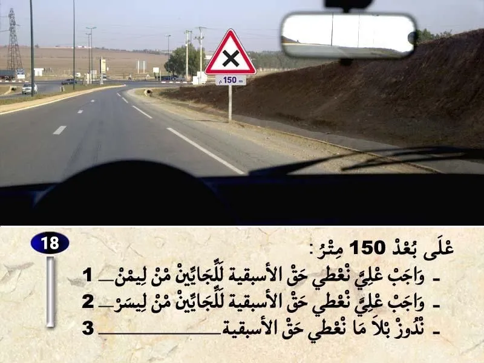
الجواب الصحيح: 1
العلامة الطّرقية تعني انتباه خطر وجود ملتقى طرق على بعد 150 متر، إذن في ملتقى الطّرق القادم الأسبقية للعربات القادمة من اليمين.
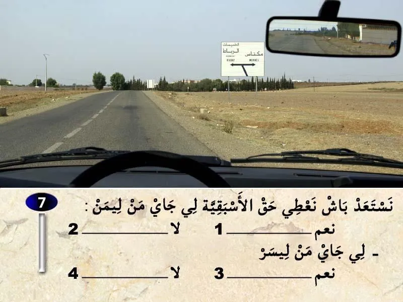
الجواب الصحيح: 1 و 3
العلامة الطّرقية الخاصة بالإرشاد تشير إلى وجود ملتقى طرقي، ملتقى الطّرق بعيد ولا أعلم ما هي الإشارة الطّرقية التي تتواجد في الأمام، ويمكن أن تتواجد علامة قف أو ليس لي حق الأسبقية، إضافة إلى أنه نتواجد في طريق فرعية (طريق صغيرة كما تبيّن علامة الإرشاد. في ملتقى الطّرق سوف نجد طريق رئيسية (طريق كبيرة) إذن في هذه الحالة أقوم بالاستعداد لإعطاء الأسبقية للعربات القادمة من الجهة اليمنى وكذلك اليسرى. الحواب الصحيح هو رقم 1 و 3.
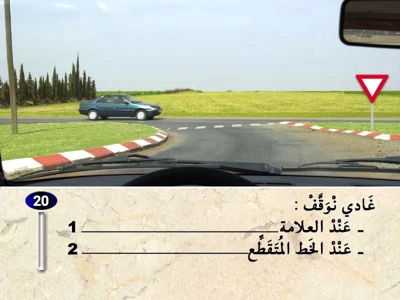
الجواب الصحيح: 2
الخط المتقطّع فهو تابع للعلامة الطّرقية الخاصة ب ليس لي حق الأسبقية، وإذا كنت سوف أقف فسوف أقوم بذلك عند الخط المتقطّع لكي تكون لي الرؤية واضحة أكثر وليس عند العلامة.
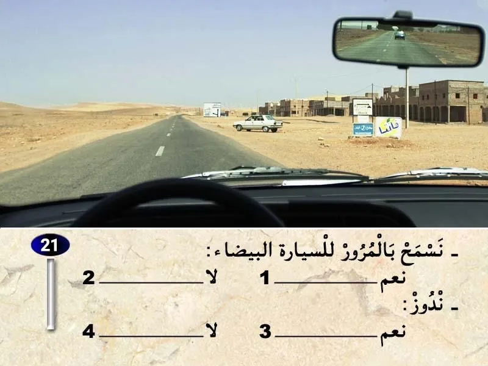
الجواب الصحيح: 2 و 3
أتواجد في طريق رئيسية والسيّارة البيضاء تتواجد في طريق غير معبّدة ويستعد للاندماج في حركة السّير، إذن في هذه الحالة لا أسمح للسيّارة البيضاء بالمرور بل أقوم بالمرور أنا أولا.
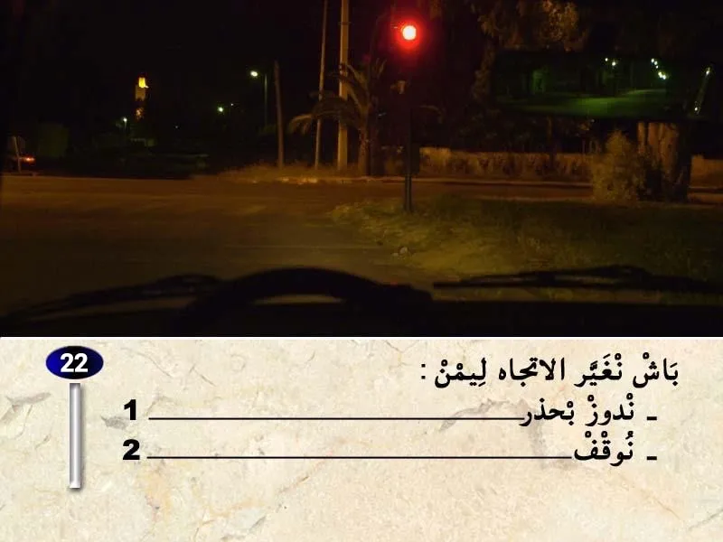
الجواب الصحيح: 2
حتى وإن كانت الطّريق فارغة ولا يوجد أحد فلا يمكنني المرور بحذر، الإشارة الضوئية الحمراء و تجبرني على الوقوف وانتظار الإشارة الضوئية الخضراء لكي أستطيع المرور. إذن في هذه الحالة لكي أقوم بتغيير الاتّجاه إلى اليمين فيجب عليّ بالوقوف.
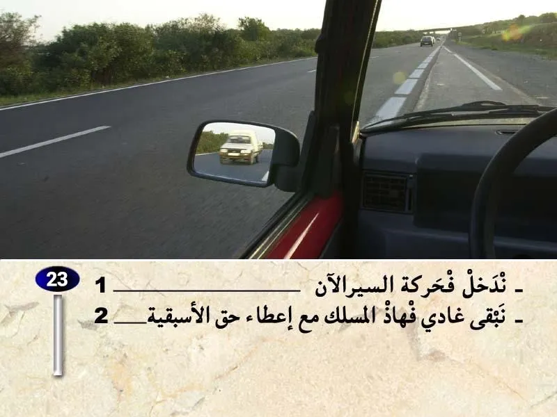
الجواب الصحيح: 2
المرآة الجانبية للسيّارة توضّح أنه توجد سيّارة قادمة من الخلف، إذن لا أستطيع الدخول في حركة السّير الان. إذن في هذه الحالة سوف أبقى أسير في مسلك الاندماج مع إعطاء حق الأسبقية للسيّارة.
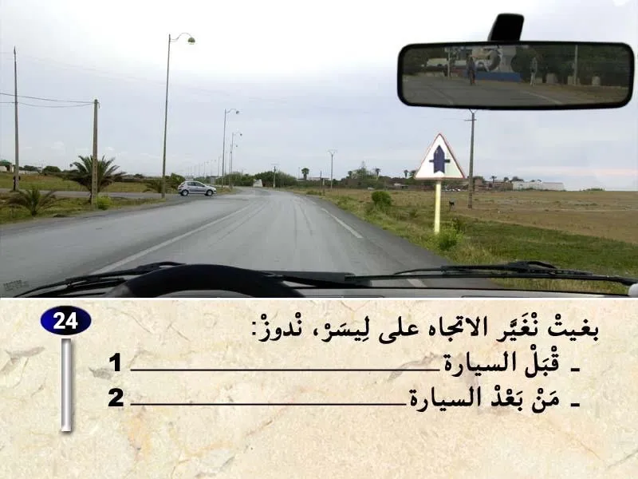
الجواب الصحيح: 1
العلامة الطّرقية تعني انتباه طريق ذات أولوية وهذا يعني أن الأسبقية لي في ملتقى الطّرق القادم ولن أقوم بإعطاء حق الأسبقية للعربات القادمة من الجهة اليمنى أو اليسرى، إذن في هذه الحالة إذا أردت تغيير الاتّجاه إلى اليسار فأقوم بالمرور قبل السيّارة.
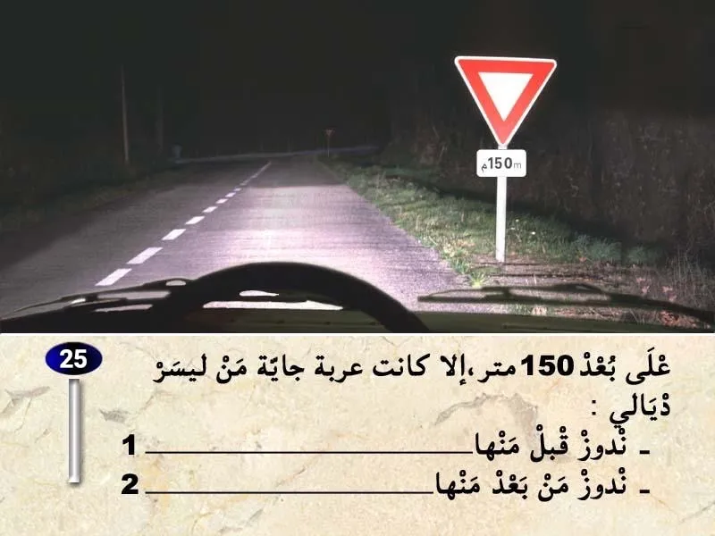
الجواب الصحيح: 2
العلامة الطّرقية تعني ليس لي حق الأسبقية في ملتقى الطّرق القادم المتواجد على بعد 150 متر، إذن في هذه الحالة بما أنه ليس لي حق الأسبقية في ملتقى الطّرق القادم وإذا كانت هنالك عربة قادمة من اليسار فسوف أقوم بالمرور بعدها.
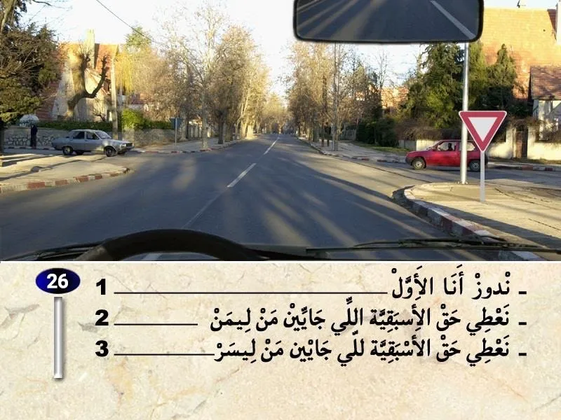
الجواب الصحيح: 2 و 3
العلامة الطّرقية تعني ليس لي حق الأسبقية في هذا الملتقى الطّرقي، إذن في هذه الحالة بما أنه ليس لي حق الأسبقية في هذا الملتقى الطّرقي إذن لا يمكنني المرور أنا الأول بل يجب عليّ إعطاء حق الأسبقية للعربات القادمة من اليمين وأيضا من اليسار.
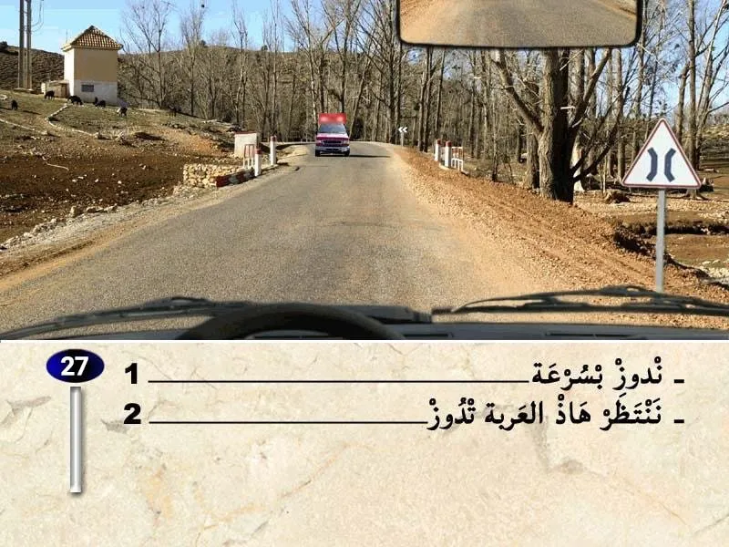
الجواب الصحيح: 2
سيارة الإسعاف في مهمّة وهذا واضح من خلال ضوء التّنبيه بالأحمر الذي يشتغل فوقها، عندما تكون سيارة الإسعاف في مهمّة استعجالية فالأولوية لها دائما. إذن في هذه الحالة يجب عليّ انتظار سيارة الإسعاف أن تقوم بالمرور أوّلا.
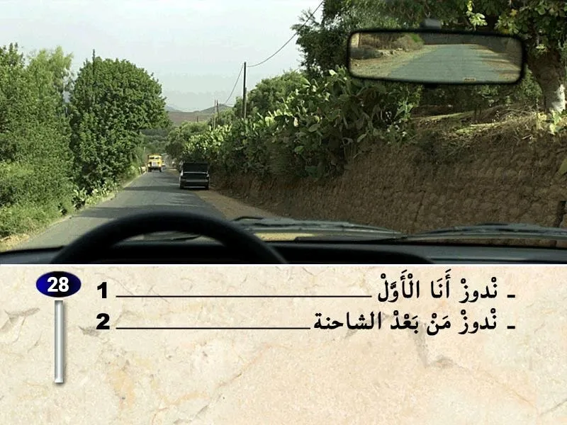
الجواب الصحيح: 2
يوجد عائق في مسلك السّير الخاص بي وهي سيارة متوقفة، لكي أقوم بإكمال السّير فيجب عليّ أن أقوم بتجاوز هذه السيّارة المتوقّفة، ولكي أقوم بتجاوزها يجب أن تكون الطّريق أمامي فارغة، في هذه الحالة بما أن الطّريق أمامي ليست فارغة وتوجد شاحنة قادمة في الاتّجاه المعاكس إذن سوف أقوم بتجاوز السيّارة و المرور بعد مرور الشّاحنة.
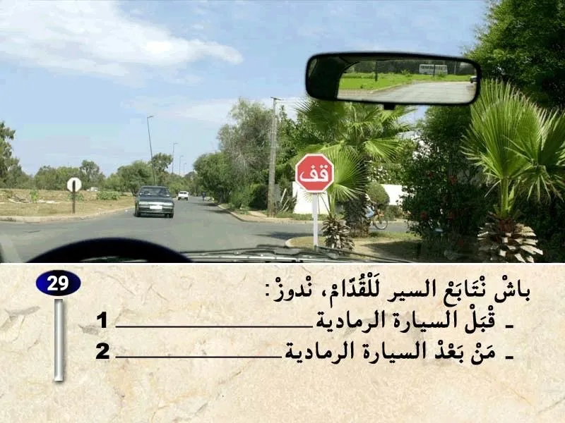
الجواب الصحيح: 1
لدي علامة قف وأيضا السيّارة الرّمادية القادمة من الأمام لديها علامة قف أيضا، في هذه الحالة بما أن السيّارة الرّمادية تريد الانعطاف على اليسار إذن سوف أتواجد على يمينها، وهذا يعني على أنه يجب على السيّارة الرّمادية إعطائي حق الأسبقية في المرور أولا. إذن في هذه الحالة أقوم بالوقوف عند علامة قف وبعد ذلك أقوم بالمرور قبل السيّارة الرّمادية.
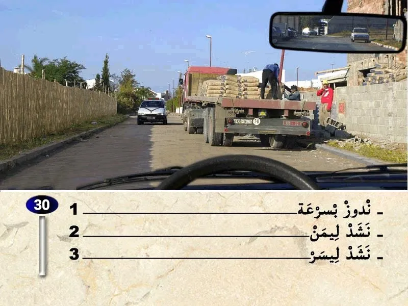
الجواب الصحيح: 2
يوجد عائق في مسلك السّير الخاص بي وهي الشّاحنة المتوقّفة، لكي أقوم بإكمال السّير فيجب عليّ أن أقوم بتجاوز هذه الشّاحنة المتوقّفة، ولكي أقوم بتجاوزها يجب أن تكون الطّريق أمامي فارغة، في هذه الحالة بما أن الطّريق أمامي ليست فارغة وتوجد سيارة شرطة قادمة في الاتّجاه المعاكس إذن سوف أقوم بالانحياز إلى اليمين وانتظار سيارة الشرطة لكي تقوم بالمرور وبعد ذلك يمكنني المرور.
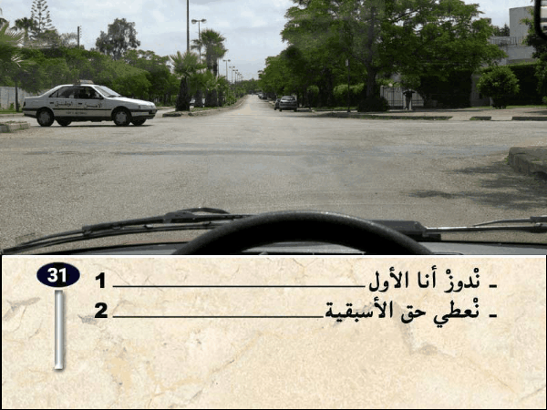
الجواب الصحيح: 2
الأسبقية للسيّارات المتواجدة على اليمين في ملتقى الطّرق وأنا أتواجد على يمين سيارة الشّرطة إذن الأسبقية لي، لكن سيارة الشّرطة في مهمّة وهذا واضح من خلال ضوء التّنبيه بالأحمر الذي يشتغل فوقها، عندما تكون سيارة الشّرطة في مهمّة استعجالية فالأولوية لها دائما. إذن في هذه الحالة سوف أعطي حق الأسبقية لسيّارة الشرطة بالمرور أوّلا.
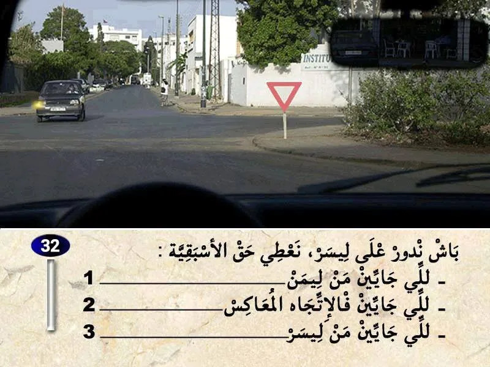
الجواب الصحيح: 1 و 2 و 3
العلامة الطّرقية تعني ليس لي حق الأسبقية يعني سوف أعطي حق الأسبقية للعربات القادمة من الجهة اليمنى وكذلك العربات القادمة من الجهة اليسرى، بالنسبة لي بما أنني أريد أن أنعطف على اليسار إذن العربة التي أمامي سوف تصبح على يميني إذن سوف أعطيها حق الأسبقية في المرور هي أوّلا. إذن في هذه الحالة لكي أقوم بالانعطاف على اليسار سوف أقوم بإعطاء حق الأسبقية للعربات القادمة من اليمين واليسار وأيضا العربات القادمة من الاتّجاه المعاكس.
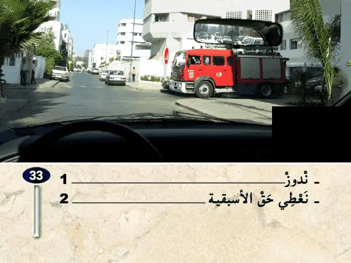
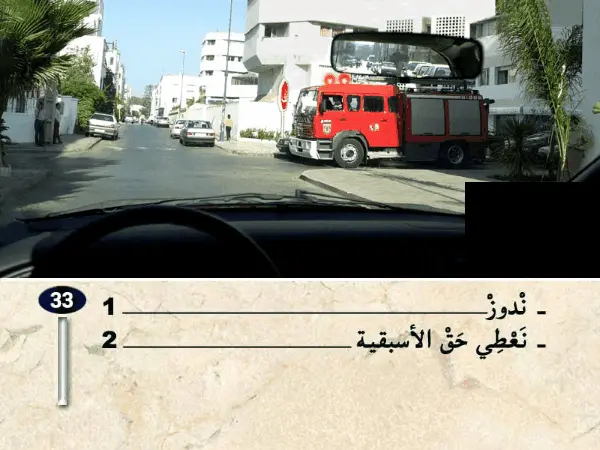
الجواب الصحيح: 2
في هذا الملتقى الطّرقي فتوجد علامة قف لسيارة الإطفاء ويجب عليها الوقوف وأن تسمح لي بالمرور أوّلا، لكن كما نرى فإن سيارة الإطفاء في مهمّة وهذا واضح من خلال ضوء التّنبيه الأحمر الذي يشتغل فوقها، عندما تكون سيارة الإطفاء في مهمّة استعجالية فالأولوية لها دائما. إذن في هذه الحالة يجب عليّ إعطاء حق الأسبقية لسيّارة المطافئ للمرور أوّلا.
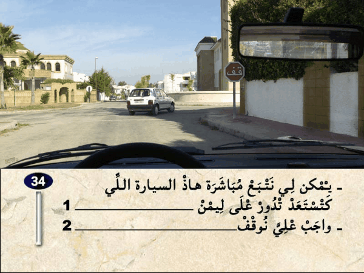
الجواب الصحيح: 2
لا يمكنني إتّباع السيارة البيضاء مباشرة لأنه هذا لا يعني أن الطّريق قد فارغة وأيضا لأنه لديّ علامة قف، يجب عليّ الوقوف والتّحقق من الطّريق وبعد ذلك يمكنني المرور. إذن في هذه الحالة من الواجب عليّ الوقوف.
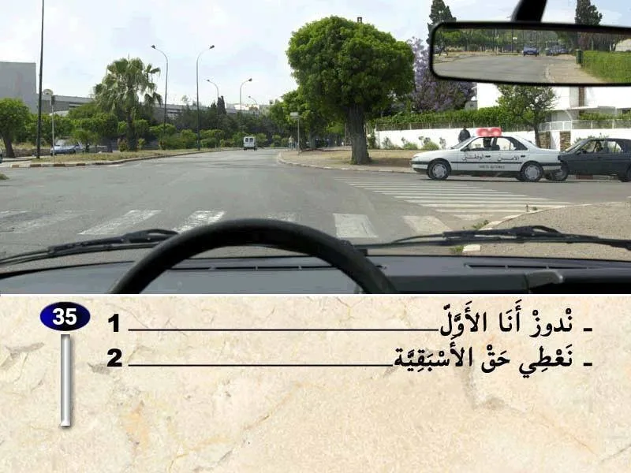
الجواب الصحيح: 2
سيارة الشّرطة في مهمّة وهذا واضح من خلال ضوء التّنبيه بالأحمر الذي يشتغل فوقها، عندما تكون سيارة الشّرطة في مهمّة استعجالية فالأولوية لها دائما. إذن في هذه الحالة سوف أعطي حق الأسبقية لسيّارة الشرطة بالمرور أوّلا.
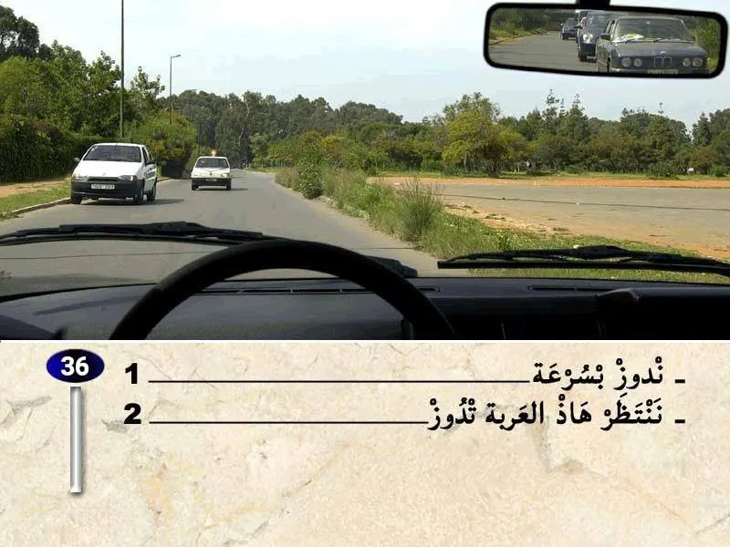
الجواب الصحيح: 2
يوجد عائق بالنسبة للسيارة القادمة من الأمام والتي هي سيارة شرطة والعائق هي السيّارة المتوقفة في جهتها أي أنه يجب عليها الوقوف وإعطائي حق الأسبقية، لكن كما يظهر في الصورة فإن سيارة الشّرطة في مهمّة وهذا واضح من خلال ضوء التّنبيه بالأحمر الذي يشتغل فوقها، عندما تكون سيارة الشّرطة في مهمّة استعجالية فالأولوية لها دائما. إذن في هذه الحالة سوف أنتظر سيّارة الشّرطة تقوم بالمرور أوّلا.
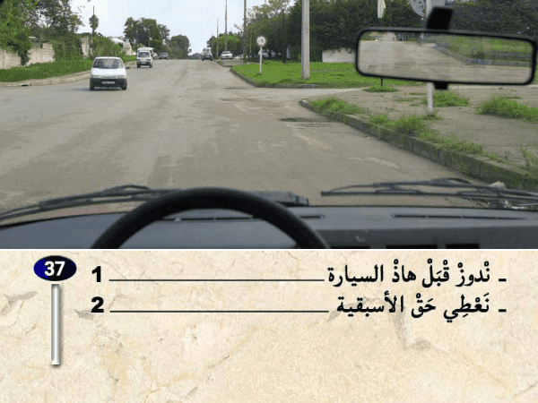
الجواب الصحيح: 1
السيّارة البيضاء تريد الانعطاف على اليسار إذن أنا سوف أصبح على يمينها، وبالتالي يجب على السيّارة البيضاء أن تعطيني حق الأسبقية في المرور. إذن في هذه الحالة أقوم بالمرور قبل هذه السيّارة البيضاء.
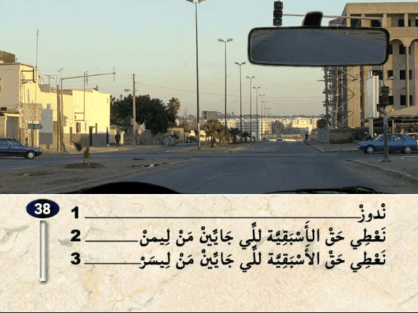
الجواب الصحيح: 2
بما أن الإشارة الضوئية لا تشتغل والضوء الأصفر رفراف لا يشتغل إذن سوف أقوم بتطبيق القاعدة العامة لملتقيات الطّرق وهي الأسبقية للعربات القادمة من الجهة اليمنى، إذن في هذه الحالة سوف أقوم بإعطاء حق الأسبقية للعربات القادمة من الجهة اليمنى.
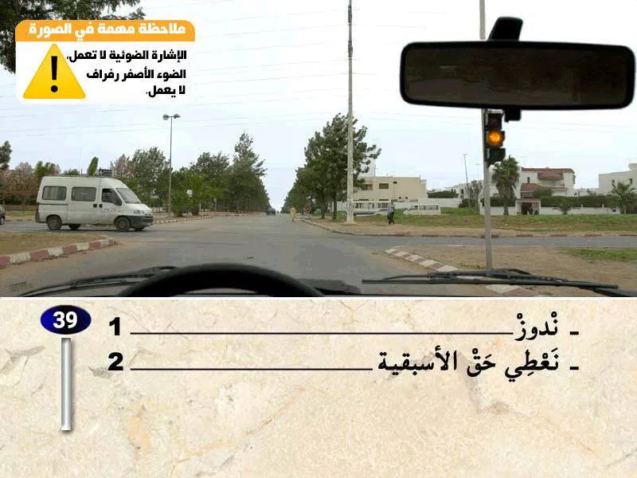
الجواب الصحيح: 1
بما أن الإشارة الضوئية لا تشتغل والضوء الأصفر رفراف لا يشتغل إذن سوف أقوم بتطبيق القاعدة العامة لملتقيات الطّرق وهي الأسبقية للعربات القادمة من الجهة اليمنى، إذن في هذه الحالة بما أنه لا توجد سيارة قادمة من الجهة اليمنى، والعربة التي على الجهة اليسرى يجب عليها أن تعطيني حق الأسبقية في المرور لأنني أتواجد على يمينها. إذن في هذه الحالة أقوم بالمرور.
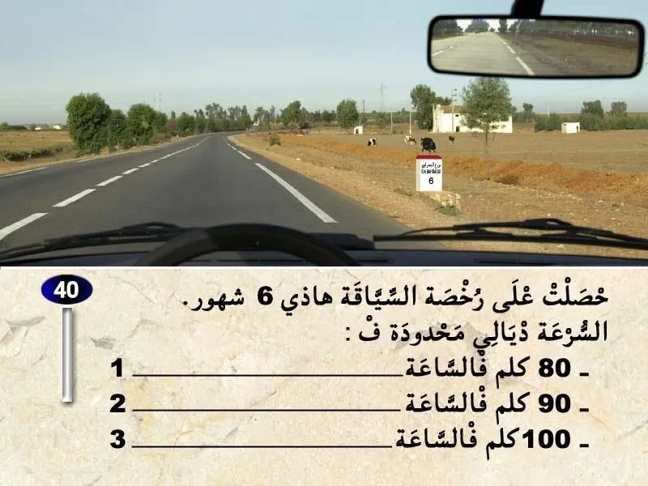
الجواب الصحيح: 2
بما أنني تحصّلت على رخصة السياقة قبل 6 أشهر إذن ما زلت في الفترة الاختبارية، وفي الفترة الاختبارية فإن السّرعة القصوى التي أستطيع السّير بها هي 90 كلم في الساعة. إذن في هذه الحالة سرعتي محدودة في 90 كلم في الساعة.